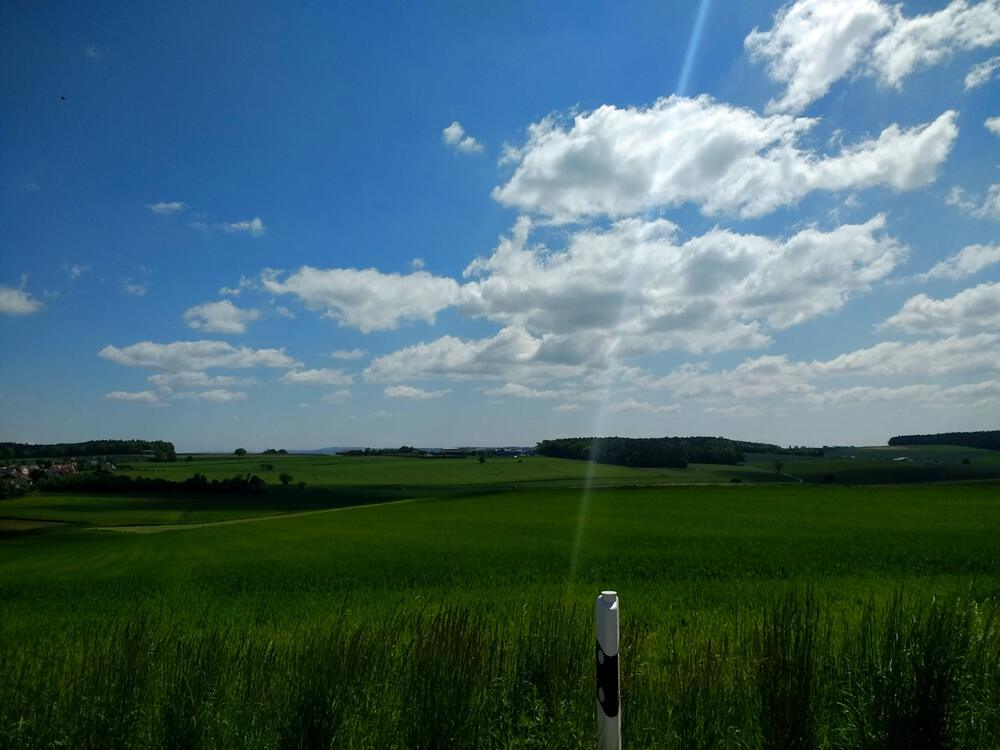
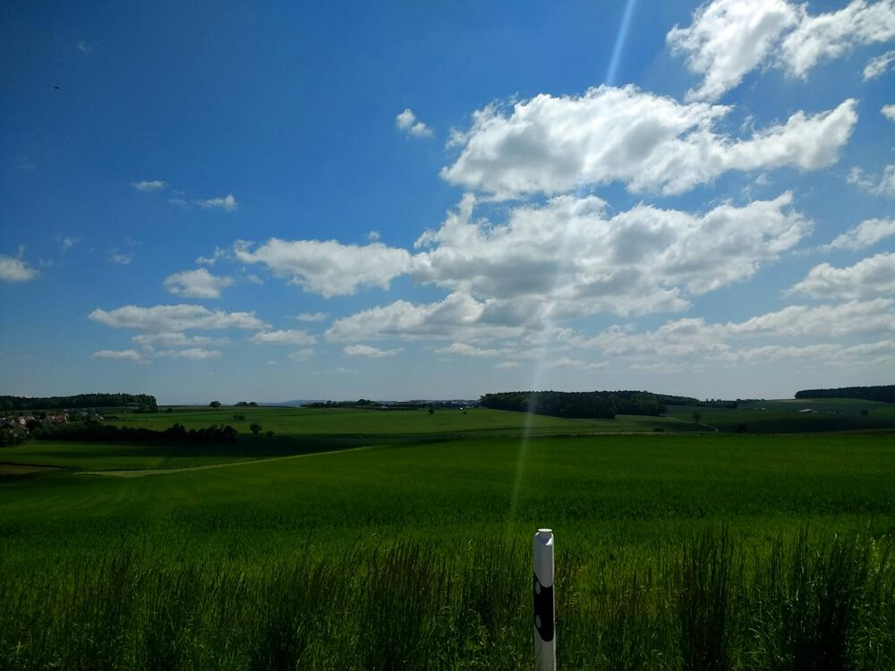

May 30, 2021
It was a nice day for a ride. Not as long as some of my other ones, but man…them hills up to Hainsacker are a real slog.

You might need to tap or click the map to make it bigger. The red solid route was my intention. The blue dashed route is my actual route.
Total Distance: 28.8 km
Time: 1:58
Calories: 1467
Calories from fat: 15 %
Average Heart Rate: 138
Maximum Heart Rate: 170
Fat Burn: 0:06
Fitness: 1:52